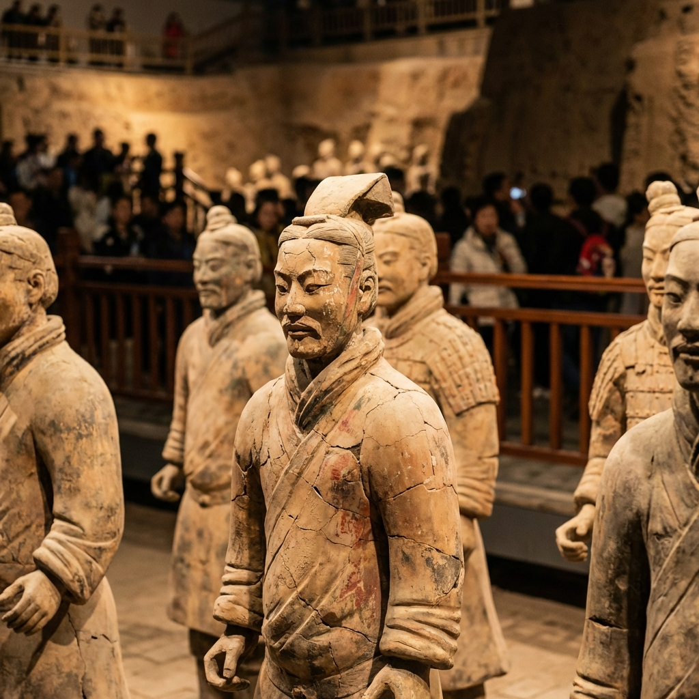

西安：十三朝古都
穿越千年时空，领略大唐盛景
历史沧桑
秦砖汉瓦·盛唐气象·丝绸之路
西安，古称长安、镐京，是中华文明和中华民族的重要发祥地。作为周、秦、汉、唐等13个王朝的都城，西安拥有超过3100年的建城史和1100年的建都史。它是古代丝绸之路的起点，连接东西方文明的桥梁。
从秦始皇横扫六合的霸气，到大唐盛世万邦来朝的辉煌，每一寸土地都埋藏着惊心动魄的历史故事。今日的西安，既保留了古老的厚重感，又充满了现代都市的活力。
古城壁垒
西安城墙是中国现存规模最大、保存最完整的古代城垣。漫步墙头，感受历史的脉动。

秦俑神采
秦始皇兵马俑被誉为“世界第八大奇迹”，成千上万的陶俑守卫着千年前的帝国梦想。